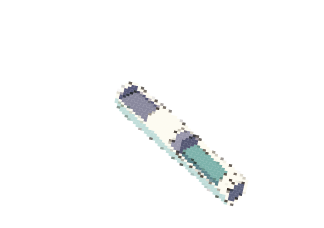
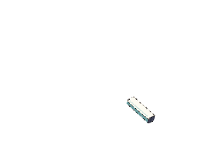
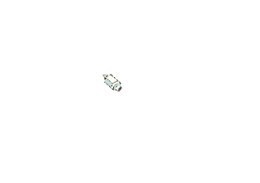

If adults in the UK replace their toothbrush or btush head every three months, around 212 million manual toothbrush and electic brush head will be thrown away each year.
Source: Flora Baker Read the article
Some toothbrush bristles are made from nylon. Studies have detected microplastic particles released from toothbrushes, including during simulated brushing. These particles may be released into the mouth, but the studies did not directly demonstrate absorption into the human body.
Source: Fang, C. et al. (2023) Read the article and Öztürk Aytulun, Ç. et al. (2025) Read the article
The handle has a plastic casing. Plastic does not simply disappear in the environment. Sunlight and wear can break it into smaller fragments,while biological breakdown can be slow and incomplete.
Source: Rosa Busquets and Marcel Jansen (2025) Read the article
If the motor breaks, you may be able to replace it. iFixit shows how to do this for the Philips Sonicare DiamondClean. You may not need to throw away the whole toothbrush.
Some battery workers come into contact with nickel and cobalt. A study in Korea found that workers with higher levels of these metals in their urine were more likely to report breathing and skin problems.
Source: Won, Y.L. et al. (2025) Read the article